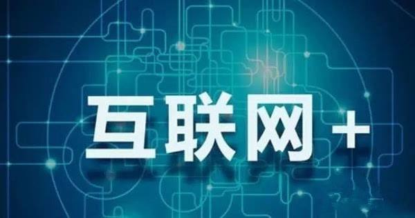

“互联网+”是创新2.0下的互联网发展的新业态，是知识社会创新2.0推动下的互联网形态演进及其催生的经济社会发展新形态。“互联网+”是互联网思维的进一步实践成果，推动经济形态不断地发生演变，从而带动社会经济实体的生命力，为改革、创新、发展提供广阔的网络平台。通俗的说，“互联网+”就是“互联网+各个传统行业”，但这并不是简单的两者相加，而是利用信息通信技术以及互联网平台，让互联网与传统行业进行深度融合，创造新的发展生态。它代表一种新的社会形态，即充分发挥互联网在社会资源配置中的优化和集成作用，将互联网的创新成果深度融合于经济、社会各域之中，提升全社会的创新力和生产力，形成更广泛的以互联网为基础设施和实现工具的经济发展新形态。2015年7月4日，国务院印发《国务院关于积极推进“互联网+”行动的指导意见》。2016年5月31日，教育部、国家语委在京发布《中国语言生活状况报告（2016）》。“互联网+”入选十大新词和十个流行语。
“互联网+”代表着一种新的经济形态，它指的是依托互联网信息技术实现互联网与传统产业的联合，以优化生产要素、更新业务体系、重构商业模式等途径来完成经济转型和升级。“互联网+”计划的目的在于充分发挥互联网的优势，将互联网与传统产业深入融合，以产业升级提升经济生产力，最后实现社会财富的增加。“互联网+”概念的中心词是互联网，它是“互联网+”计划的出发点。“互联网+”计划具体可分为两个层次的内容来表述。一方面，可以将“互联网+”概念中的文字“互联网”与符号“+”分开理解。符号“+”意为加号，即代表着添加与联合。这表明了“互联网+”计划的应用范围为互联网与其他传统产业，它是针对不同产业间发展的一项新计划，应用手段则是通过互联网与传统产业进行联合和深入融合的方式进行；另一方面，“互联网+”作为一个整体概念，其深层意义是通过传统产业的互联网化完成产业升级。互联网通过将开放、平等、互动等网络特性在传统产业的运用，通过大数据的分析与整合，试图理清供求关系，通过改造传统产业的生产方式、产业结构等内容，来增强经济发展动力，提升效益，从而促进国民经济健康有序发展 。
“互联网+”行动计划将促进产业升级。首先，“互联网+”行动计划能够直接创造出新兴产业，促进实体经济持续发展。互联网+行业能催生出无数的新兴行业。比如，互联网+金融激活并提升了传统金融，创造出包括移动支付、第三方支付、众筹、P2P网贷等模式的互联网金融，使用户可以在足不出户的情况下满足金融需求。其次，“互联网+”行动计划可以促进传统产业变革。“互联网+”令现代制造业管理更加柔性化，更加精益制造，更能满足市场需求。最后，“互联网+”行动计划将帮助传统产业提升。互联网+商务=电商，互联网与商务相结合，利用互联网平台的长尾效应，在满足个性化需求的同时创造出了规模经济效益。“互联网+”行动计划将重点促进以云计算、物联网、大数据为代表的新一代信息技术与现代制造业、生产性服务业等的融合创新，发展壮大新兴业态，打造新的产业增长点，为大众创业、万众创新提供环境，为产业智能化提供支撑，增强新的经济发展动力，促进国民经济提质增效升级。